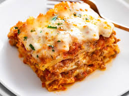

Lasagna

Description
This dishe come from Naples, Italy during the Middle Ages in the 14th century. Inittially, this dish was reserved for special events and holidays.
This recipe uses 2 layers of lasgana noodles by slightly overlapping 6 noodles on each layer.
Ingredients
- 1 pound sweet Italian sausage
- 3/4 pound lean ground beef
- 1/2 cup minced onion
- 2 cloves garlic, crushed
Steps
- Gather ur ingredients
- Cook sausage, ground beef
- Stir in crushed tomatoes, tomato sauces
- Bring a large pot of lightly salted water to a boil